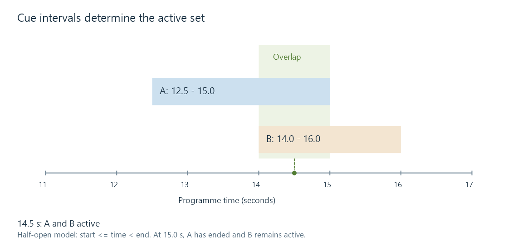

Subtitle cues
A subtitle cue is a timed presentation item whose active interval and content determine what a renderer presents at a media instant.
A cue is one timed subtitle or caption presentation item. It has an active interval and content to present during that interval. The content can be a sentence, a multi-line caption, styled text, or a view reconstructed from graphics.
A cue is not necessarily one word, one video frame or one packet. Its interval describes presentation time; file and transport structures describe how the information is delivered.
Two cues can overlap
Consider these text cues:
| Cue | Interval | Content |
|---|---|---|
| A | 12.5–15.0 s | The last train leaves at midnight. |
| B | 14.0–16.0 s | [station bell] |

For a simple half-open interval model, a cue is active when start ≤ current time < end:
| Current time | Active cues |
|---|---|
| 12.0 s | None |
| 13.0 s | A |
| 14.5 s | A and B |
| 15.0 s | B |
| 16.0 s | None |
The overlap is one second. A renderer needs to present both applicable items, with layout rules determining whether they appear in separate positions, stack, or interact.
A format such as WebVTT allows overlapping subtitle cues. A tool that assumes each cue must end when the next starts can unintentionally shorten A. A cue's end belongs to that cue, not automatically to the next cue's start.
The interval includes all its text lines
A two-line caption stored in one cue has one active interval unless the format supplies additional internal timing. The explicit line break describes layout, not a second cue.
The interval's duration is end minus start. A 12.5–15-second cue lasts 2.5 seconds. A number or identifier such as 42 identifies a cue record; it does not supply that duration.
Endpoint conventions belong to the format or processing model. The half-open model above makes adjacent intervals unambiguous at a shared boundary. Frame-based authoring can instead describe a last displayed frame and need an explicit conversion to time boundaries.
Presentation can change inside one cue
An ASS event can move or fade during its interval. A karaoke caption can progressively highlight syllables. Timed spans in another text model can make parts of a line active at different moments.
At 14 seconds, drawing the event's initial appearance again would be wrong if it has already moved or changed colour. Rendering depends on both the active interval and the event's internal state at the current time.
Graphics formats also transmit objects, palettes and composition updates. A conventional cue list can be derived from their presentation changes, but every palette segment is not independently a new sentence to display.
Seeking asks for the active state at the destination
If playback jumps directly to 14.5 seconds in the example, the correct active set is A and B. The player does not need to visibly replay every preceding cue to get there. It does need the data and state required to construct the current presentation.
A simple text cue can be found through its interval. A graphics update may refer to a palette or object established earlier. A nested TTML element may inherit timing and style. The information required after a seek is therefore format-dependent.
For an Emby subtitle that disappears after seeking but works from the beginning, inspect the selected track and whether the route can reconstruct the active presentation. That is a different behavior from a correctly displayed cue appearing at a constant wrong time.